/* thomas-demand - proofs */
11 plates. Deterministic overlays rendered by the composition-analysis skill.
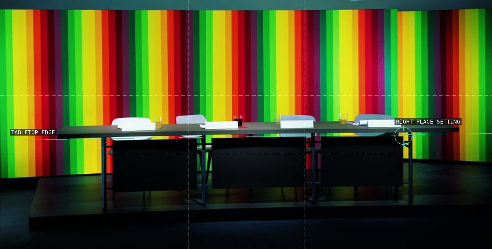
01-studio-1997
Table edge and a repeated striped field.
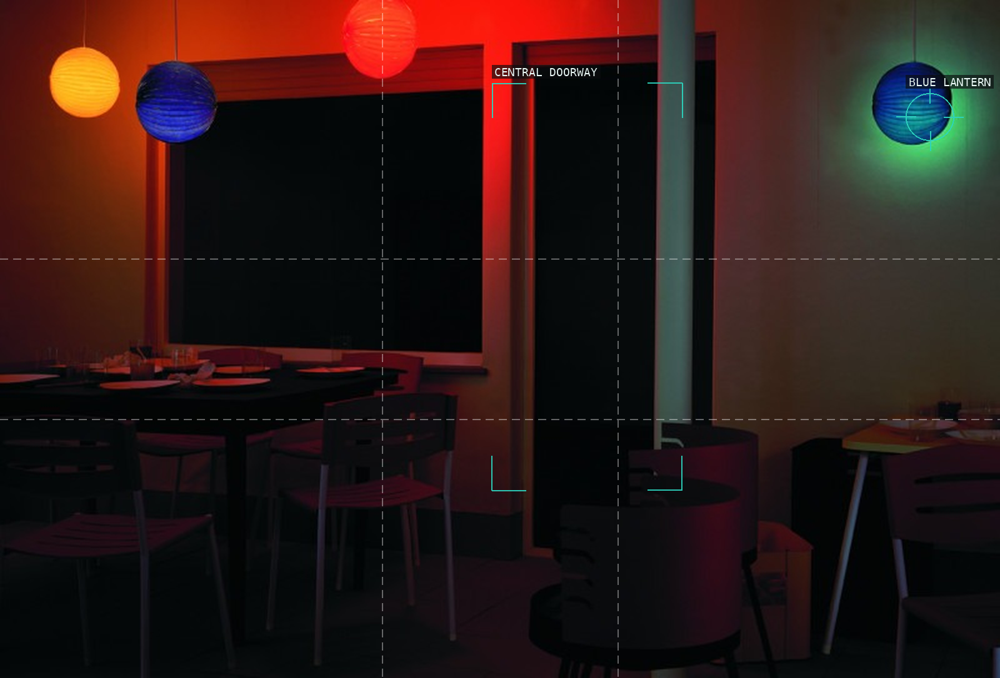
02-terrace-1998
Lanterns punctuate a sequence of dark thresholds.
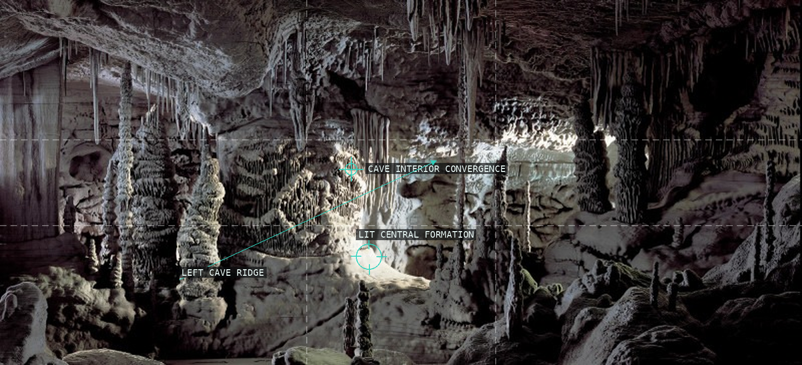
03-grotto-2006
Cave ridges pull toward a central lit formation.
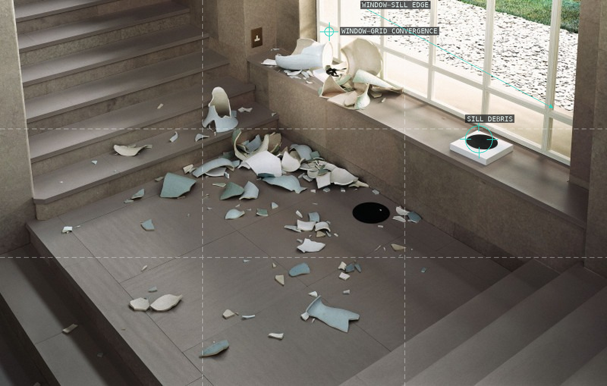
04-landing-2006
Window geometry and debris share a stair landing.
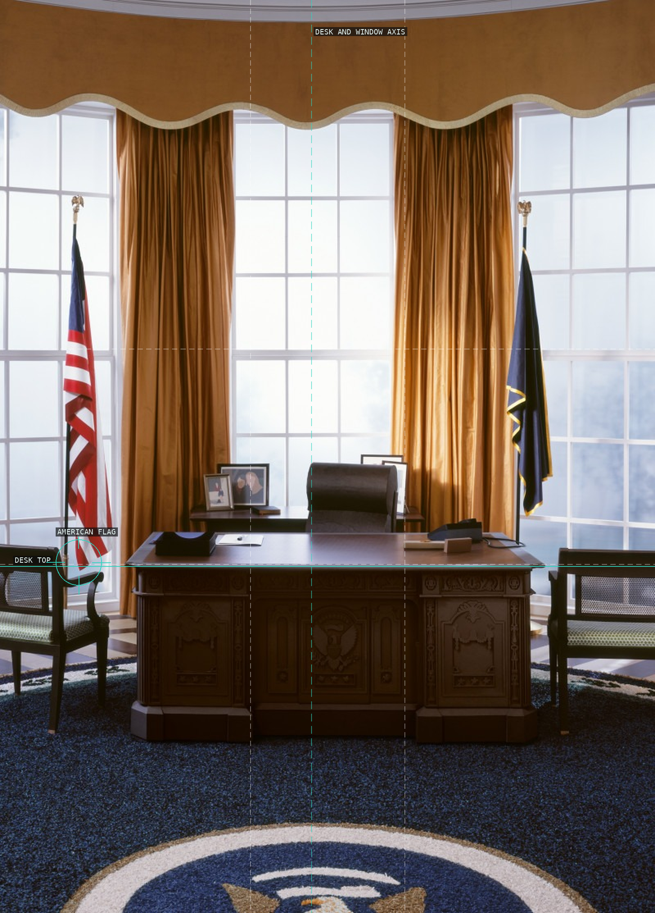
05-presidency-2008
Desk horizon and institutional axis regulate the room.
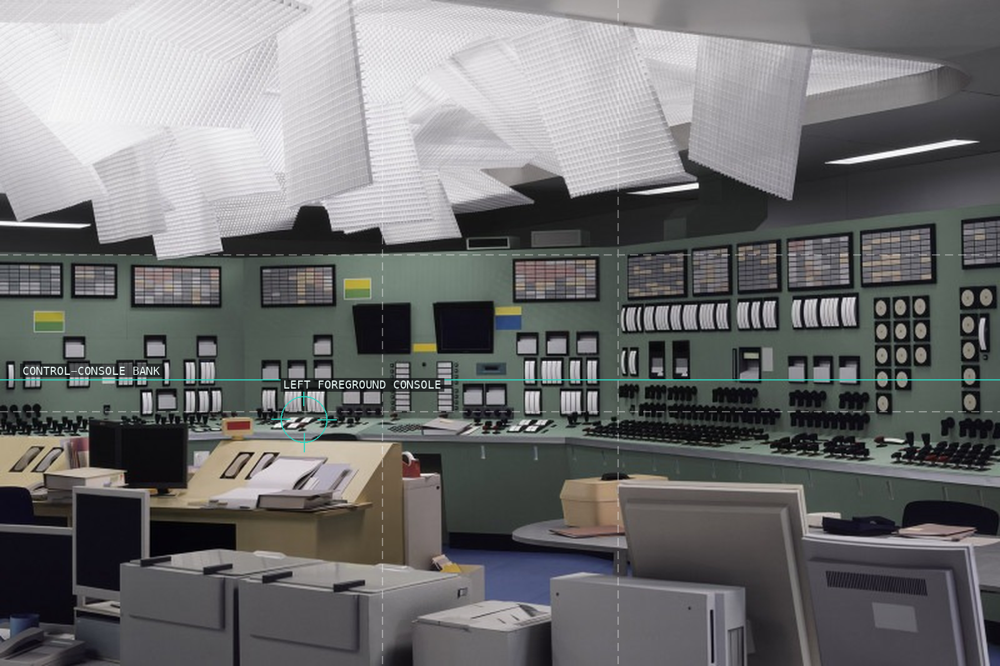
06-control-room-2011
Repeated consoles turn an empty room into a field.
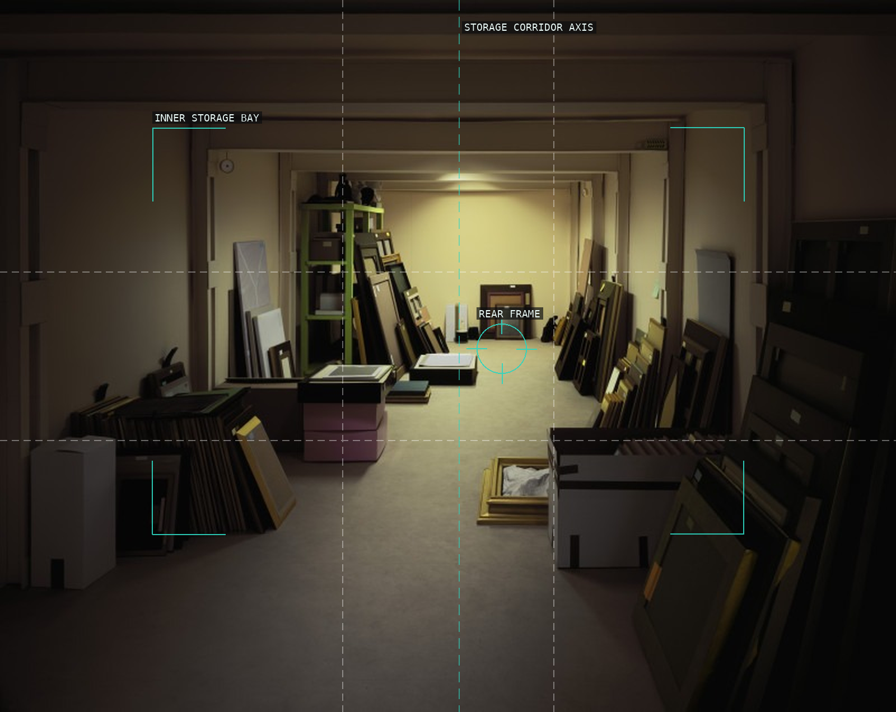
07-vault-2012
Nested storage bays draw inward to a rear frame.
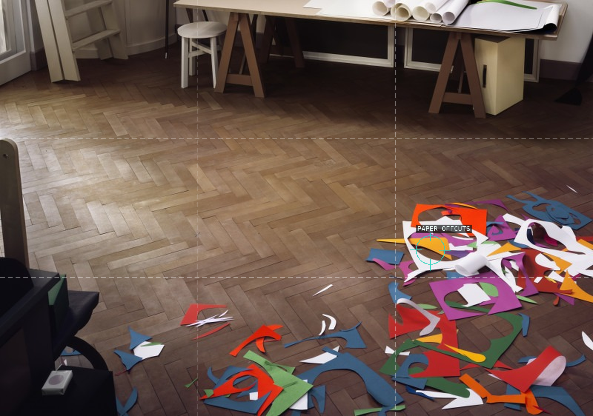
08-atelier-2014
Colored offcuts puncture a large parquet field.
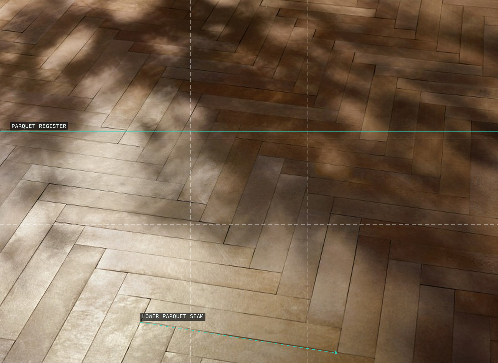
09-parkett-2014
Seams make parquet an all-over structure.
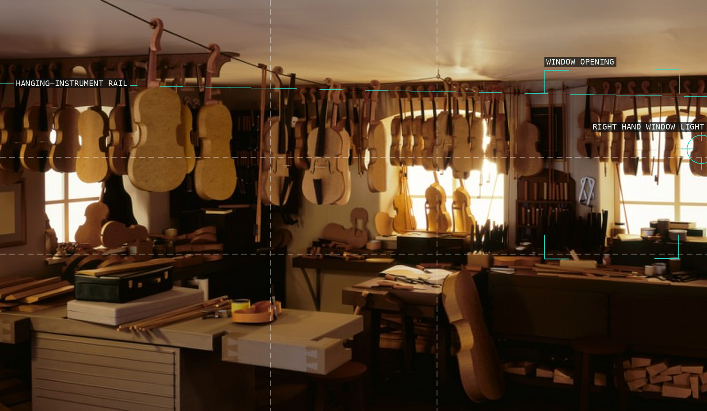
10-workshop-2017
Hanging instruments meet a right-hand window.
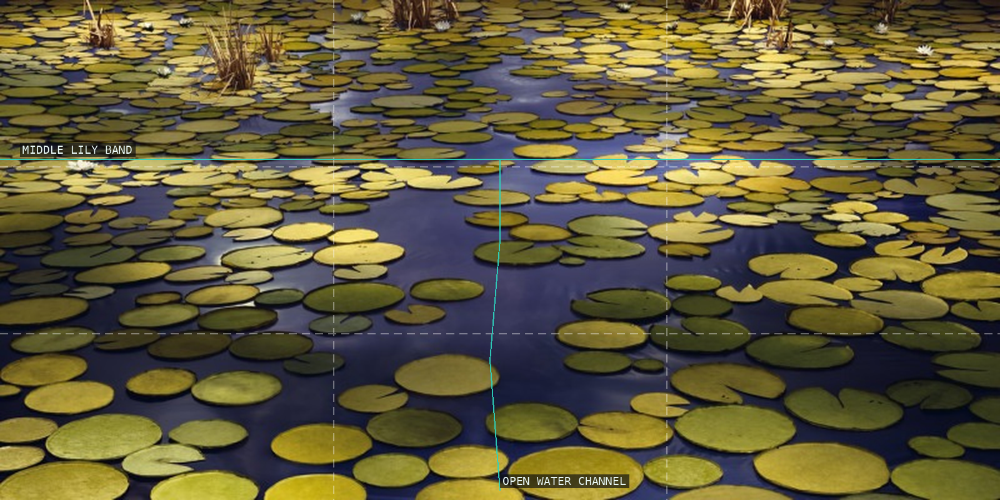
11-pond-2020
Open water channels a field of lily pads.